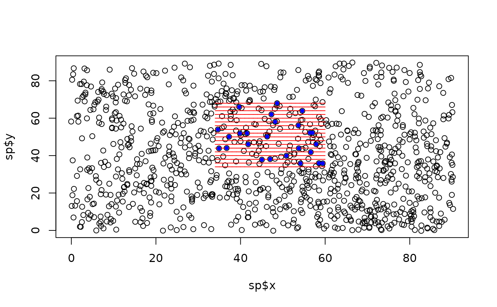

Detection process on spatial point process
detection_process.RdThis function can be used to simulate the detection process when the surveyed individuals are fixed on the geographical space, for example when the species distribution is generated by simul_spat. If strip_transect is emulated, an individual is considered detected if its distance to the track line is lower than the width (provided with sigma). If line-transect is emulated, a half-normal detection function is built using the given sigma as effective strip half-width. The user must define if the simulation is done in a virtual space or not (if not, the distances must be provided in km and pts and transects objects must be projected).
Usage
detection_process(
pts,
transects,
strip_transect = TRUE,
sigma = NULL,
seg_id_col = NULL,
virtual_space = TRUE
)Arguments
- pts
sf object (points), the position of individuals to be surveyed
- transects
sf object (lines), survey layout with transects or segments (not buffered)
- strip_transect
Boolean. Should strip-transect methodology be used? Default to TRUE
- sigma
numeric, is strip_transect is TRUE, the width of the strip width; if strip-transect is FALSE, the effective strip half-width (in km, if in real space)
- seg_id_col
character, the name of the column in transects where the ids are stored
- virtual_space
Boolean. Is the survey done in a virtual space? Default to TRUE.
Value
the pts dataframe (sf object) with additional columns: distance, distance_km (if in real space), seg_id (the closest transect or segment from the individual) and detected (1 if the individual is detected, 0 otherwise)
See also
simul_spat generate_survey_plan
Other survey simulation functions:
assign_flight_plan(),
generate_survey_plan(),
launch_survey_on_movement()
Examples
grid <- create_grid()
env <- generate_env_layer(grid = grid)
#> [using unconditional Gaussian simulation]
sp <- suppressWarnings(simul_spat(ref_map = env$rasters$sim1,
N = 1000,
n_sim = 1,
return_wgs_coordinates = FALSE))
pts <- detection_process(pts = sp,
transects = example_data$survey$segments,
strip_transect = TRUE,
sigma = 0.2,
virtual_space = TRUE,
seg_id_col = "seg_id")
#> Strip-transect is used with a width of 0.2
plot(sp$x, sp$y)
plot(sf::st_geometry(example_data$survey$segments), col = "red", add = TRUE)
points(sf::st_drop_geometry(pts[which(pts$detected == 1), c("x", "y")]),
pch = 20, col = "blue")
